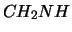
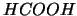
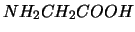
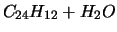

Para calcular el costo del tiempo computacional se asumio una vida media de 3 años para el software & hardware.
|  | .... | 100 horas = $ 68500 |
|  | .... | 100 horas = $ 68500 |
|  | .... | 150 horas = $ 102750 |
|  | .... | 200 horas = $ 137000 |
| Especies sobre Sustrato | .... | 900 horas = $ 616500 |
| Total II | .... | $ 993250 |
| Total Final | .... | $ 1493250 |